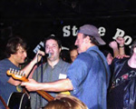
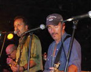
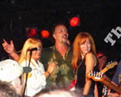
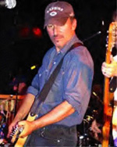
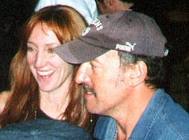
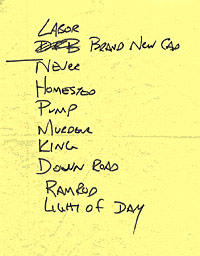

Bruce Springsteen
with
Joe Grushecky & The Houserockers
Just Around The Corner
the Stone Pony soundboard recording from Nov. 3,
2000
  
November 3rd 2000 Bruce Springsteen joined Joe Grushecky and The
Houserockers during the Light of Day Concert to benefit The Parkinson's Disease
Foundation.
Some information about the show is available on-line: an article
from the Asbury
Park Press, some photos,
and an unauthorized soundboard recording of the performance which
surfaced shortly after the show. The following was the reaction of
Bob Benjamin, Grushecky's manager, as posted on the
rec.music.artist.springsteen newsgroup:
I wanted to thank everyone for their support, for coming out to
the Stone Pony and for their kind words in the wake of the Light of
Day Concert to Benefit The Parkinson's Disease Foundation
(PDF).
Over 800 people came to show and between ticket sales and the
raffle we will be able to donate approximately $20,000 to the
PDF.
The PDF is a national, non-profit organization with offices in
New York City and Chicago. The PDF is dedicated to supporting and
promoting the highest-quality research worldwide into the cause(s)
and cure of Parkinson's Disease (PD), and for better symptomatic
treatments. Founded in 1957, The PDF was the first private
foundation in the United States created specifically to advance
research into PD.
It has come to my attention that there is an unauthorized
soundboard recording of Bruce Springsteen's performance with Joe
Grushecky & The Houserockers circulating in the fan community.
This recording in no way has been authorized or condoned by any of
the musicians, managers, promoters, event organizers or club
management involved in the concert.
If anyone does get this or other recordings of the show it would
be greatly appreciated if they could see it in their heart to make
a donation to the PDF. Parkinson's Disease is the reason this night
came together and I hope no one loses sight of that as they replay
the evening in their minds and/or on their stereos.
Thank you,
Bob Benjamin
P.S. If you would like to contact the Parkinson's Disease
Foundation to make a donation or just for information please refer
to the numbers and addresses listed below.
Telephone: 212.923.4700
800.457.6676
Fax: 212.923.4778
Address: Parkinson's Disease Foundation
William Black Medical Building
Columbia-Presbyterian Medical Center
710 West 168th Street
New York, NY 10032-9982
Email: info@pdf.org
This can be an exquisitely unique chance to try and change the
attitude towards trading and recording, so to let the musicians and
their management know how much we appreciate the possibility to
hear such recordings.
This page is aimed at producing a massive positive response to
Bob Benjamin's request.
You can make your donation via credit card (VISA, MasterCard or
American Express). You can do it by phone (1-800/457-6676 -
1-212/923-4700) or online on the PDF's secure website: go to www.pdf.org and click on the
"Giving Online" link to donate via
credit card. You can also send cash (US currency if possible, but
other currency are accepted) or US checks, foreign checks, money
orders, stocks made payable to Parkinson's Disease Foundation:
Parkinson's Disease Foundation
William Black Medical Building
Columbia-Presbyterian Medical Center
710 West 168th Street
New York, NY 10032-9982 |
|
|
It is crucial to include an explanatory note about your
donation, with specific mention of the tape. We may thus get *that*
message across. When the donation is received, a card will be sent
to Bob, letting him know about the donation.
You can use the on-line donation "Comments" window or the check
memo space to write: "Per Bob Benjamin's request, for the Stone
Pony tape." Even better you can do it in a cover letter.
Here is a sample letter (you may even copy it into the on-line
"Comments" window):
Parkinson's Disease Foundation
710 West 168th St.
New York, NY 10032
Dear Sirs:
Enclosed please find my check in the amount of $_____ as a
donation to the Parkinson's Disease Foundation.
I became aware of the fine work done by your organization
through the efforts of Bob Benjamin. [I was very pleased to attend
the benefit concert organized by Bob on November 3 at the Stone
Pony in Asbury Park. -or- Unfortunately, I was not able to attend
the benefit concert organized by Bob on November 3 at the Stone
Pony in Asbury Park.] [Additionally/However], through the online
community that specializes in trading tapes of Bruce Springsteen
performances, I have obtained a copy of the benefit concert.
As is the tradition in our community, when one receives a tape
of a performance, they give something back to the people that made
that tape available to them. I am not sure about the original
source for the tape I received, but I know that this tape would not
have existed if it hadn't been for the Parkinson's Disease
Foundation. Thus, my donation is, in some fashion, my thank you for
this tape.
Thank you again for your wonderful efforts in finding a way to
combat this disease.
Sincerely, _____________
This may well be the greatest and only chance to offer the right
picture of the trading/recording community. Let's try to restore
the original intention behind the legendary exhortation:
"Bootleggers, roll your tapes!"
  
CDs of the show are available thanks to the efforts of many
traders (ask for the CDs in the usual forums:
rec.music.artist.springsteen, Stone Pony London, etc.). Please do
not pay for these CDs, except to cover blanks and postage.
The artwork, plus a letter which should go to everyone getting
the set, can be found at: www.geocities.com/fakida/pony.html
(the Acrobat files will fit the jewel case correctly if you use
"print image" instead of "fit to page").
If you have problem with the Acrobat files try the jpeg files at
springsteen.homestead.com/pony.html
Setlist:
- Labor Of Love
- Brand New Cadillac
- Never Be Enough Time
- Homestead
- Pumpin' Iron, Sweatin' Steel
- Murder Incorporated
- Talking To The King
- Down The Road A Piece
- Diddy Wah
- Everything's Gonna Work Out Right
- I Hear You Knockin' But You Can't Come In
- Ramrod
- Light Of Day
- Twist And Shout
- I Don't Wanna Go Home
Thanks for supporting the Parkinson's Disease Foundation ... and
the Bruce Springsteen tape trading community!!!
|